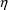
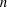
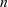

NONMEM Users Guide Part IV - NM-TRAN
Preface. to 4d Edition
General. Improvements to NONMEM
Support. for New Features of PREDPP
General. Improvements to NM-TRAN
NM-TRAN. Data Set and Data Preprocessor
New. features of Abbreviated Code
New. Features for PREDPP
Other. Control records
About. this document ...
NONMEM Users Guide Part IV - NM-TRAN
Preface. to 4d Edition
The appearance of this 4th
edition of the NM-TRAN Guide coincides with the appearance
of NM-TRAN 7.4.2 and NONMEM 7.4.2. It contains minor changes
since the 3d. edition, which appeared with NM-TRAN 7.4.0 and
NONMEM 7.4.1 and was the first new edition since NM-TRAN
Version II and NONMEM IV in 1992.
Significant changes since the
2nd. edition and the 3d. edition are marked with bars.
Versions of NM-TRAN are now
numbered to match those of NONMEM. This version supports the
new features of NONMEM and PREDPP Versions 7.4.0, 7.4.1, and
7.4.2 In addition, there are improvements in the level of
support NM-TRAN provides to usage of NONMEM and PREDPP that
does not take advantage of any new features of these latest
versions.
In the first edition of this
Guide the terms
individual data
and
individual data set
were used. In this edition these terms are replaced
by
single-subject data
and
single-subject data set
The section clarifying the differences between population
and
single-subject data and between the use of
 and
and

variables with these two kinds of data, section II.C.4, has
been
improved, and should be consulted.
Section II.D discusses the
analysis of categorical ("odd-type") data using

variables but no
 variables (nmv). NONMEM can also analyze a population data
set as if the data from each individual were single-subject
data ("POPULATION WITH UNCONSTRAINED ETAS"); see
Section III.B.10 (nm73).
variables (nmv). NONMEM can also analyze a population data
set as if the data from each individual were single-subject
data ("POPULATION WITH UNCONSTRAINED ETAS"); see
Section III.B.10 (nm73).
Note the difference between a
data record (which is a single record, also called a
line in a data file) and an individual record,
which is a group of contiguous data records having the same
value for the ID data item and presumably containing data
from the same subject.
General. Improvements to NONMEM
NM-TRAN supports general
improvements such as:
Dynamic allocation of arrays in
NONMEM, PREDPP, and PREDPP, including compile-time changes
to SIZES.f90 and run-time changes using the $SIZES record
(nm71).
Larger NONMEM data files
(nm71)
No limit on the
number of records
No limit on the length of records
No limit on the number of items per record
More characters per data item
More characters in ID item
No need for FINISH records
Increases in the numbers of
ETA’s, EPS’s, THETA’s; indices may have 3
digits (nm72).
Numerical values in $THETA,
$OMEGA, and $SIGMA may be each up to 30 characters long, and
may be described in E field notation (nm72).
When initial estimates of thetas
are to be estimated, evaluations can now be done for FOCE
and LAPLACE, not just for FO.
Parallel processing using option
PARAFILE of task records $ESTIMATION, $COVARIANCE, $TABLE,
$SIMULATION (nm72).
The $CHAIN Record supplies
initial estimates for an entire problem (nm72).
The $LEVEL record is used to
define "super ID" data items, which define
additional random nesting levels above that of subject ID
(nm73).
The $SUPERPROBLEM Record allows
multiple NONMEM problems to be grouped into superproblems
and repeated (nmv).
New reserved data items
RAW_ (nmv), MRG_ (nmv), RPT_
(nmvi) for new features: raw data averages, Expectation,
Repetition (nmv). New reserved variable TEMPLT can be used
with raw data averages. New record $OMIT lists data item
types to be excluded from template matching when raw data
averages are computed (nmvi).
Reserved variables CTLO, CTUP
allow an observation to be the event that the value of a
normally distributed variable falls in a given interval.
Reserved variables YLO, YUP allow the likelihood for an
observation to be conditioned on the observation being in
(or outside) an interval (nmvi).
$NONPARAMETRIC Record and
Non-Parametric Step (nmvi).
BOOTSTRAP options of
$NONPARAMETRIC and $SIMULATION Records (nm73)
PRIOR Feature (nmvi)
The PRIOR
subroutine allows a penalty function to be specified and
added to the -2log likelihood function.
$PRIOR Gives
instructions for generating the PRIOR subroutine. (nmvi)
Informative
names for $THETA, $OMEGA, $SIGMA (nm73)
$THETAP Gives prior information for THETA
$THETAPV Gives variance information for THETA priors.
$OMEGAP and $OMEGAPD Gives prior information for OMEGA.
$SIGMAP and $SIGMAPD Gives prior information for SIGMA.
The $DEFAULT record can be used
to specify defaults for NONMEM (nm74).
The MISDAT option of $DATA
defines one or more particular numerical values to indicate
a missing data value in the data set, which is displayed on
$TABLE outputs, but is safely interpreted as 0 by other
steps of NONMEM (nm74)
Support. for New Features of PREDPP
New ADVAN routines: ADVAN11,
ADVAN12 (nmv), ADVAN13, ADVAN14, ADVAN15 (nm74)
Larger models with more
compartments.
Compartment intialization
feature (A_0, A_0FLG variables) (nmvi).
Model event times (MTIME
variables) (nmvi).
Initial steady state feature
(I_SS variable and I_SS option of $MODEL) (nmvi).
Extra EVID values (XVID1, XVID2,
XVID3, XVID4, XVID5 variables) (nm72).
Negative values for TIME data
item (nm74).
Output-type compartments. This
has always been a feature of PREDPP, but was not documented
previously.
General. Improvements to NM-TRAN
All control records and
abbreviated code are case independent (nm72).
Continuation character & may
be used at the end of any line of the control stream to
indicate that the line is to be continued, including control
records as well as abbreviated code (nm73).
Data item labels and
user-defined variable names in abbreviated code may have
more characters (SD), and may use underscore "_"
(nm7).
Filenames on control records may
be longer and may use underscore (nmvi)
Abbreviated code INCLUDE
statement (nmv) and $INCLUDE record (nmvi) allow parts of
the model to be defined in other files. The file
nonmem_reserved_general is of special interest (nm73).
Changes to FSUBS:
Rearrangement of
generated code (because 1st. eta partials need not always be
computed) (nm72)
$ABBR option NOFASTDER can be used to prevent the
rearrangement (nm72).
$ABBR DERIV1=NO prevents the computation of 1st. eta
partials (nm74)
MODULES instead
of COMMONS (nm7) (Note that appendices 4, 7 and 9 show the
code as generated by NONMEM VI, in which named COMMONs were
still used.)
Dynamic memory
allocation: pointers (nm7)
NM-TRAN Library subroutines
(with input from FLIB) are no longer supported (nm72)
NM-TRAN. Data Set and Data Preprocessor
Tab character may be used to
separate data items. This allows "Excel txt (tab
delimited)" files (nmvi2.0)
TIME and II data items can have
format hh:mm:ss (i.e., hours:minutes:seconds) (nm73)
More digits in relative time
(nmv)
NM-TRAN detects blank records;
$DATA record option BLANKOK may be used (nmvi2.0)
Better handling of ill-formed
files (nmvi2.0)
$DATA LAST20 option for
2-character years (nmv)
$DATA TRANSLATE=(list) option to
convert hours to days (nmv)
$DATA IGNORE/ACCEPT=(list)
options to select records by data item value (nmvi)
$DATA NOOPEN option for multiple
problem data (nmv)
$DATA RECORDS=label option to
select records by contiguous values of a data item
(nmvi)
A change in the rule for
generated ID data item when the L2 item is defined; see
Section II.C.4.2 (nmvi)
New. features of Abbreviated Code
Nested parenthesis
Nested IF statements
Re-definition of random variables
Recursive code
CALL SIMETA, CALL SIMEPS, CALL RANDOM, CALL PASS, CALL SUPP
DO WHILE, ENDDO, RETURN , WRITE, PRINT statements
DO WHILE (DATA) statement
More FORTRAN intrinsic functions and user-written
FUNC’s
Protected versions of intrinsic functions, and $ABBR PROTECT
(nm74)
Pre-defined vector variables VECTRA(10), VECTRB(10),
VECTRC(10)....
User-defined functions and vectors using $ABBR FUNCTION and
$ABBR VECTOR (nm74)
Tests of ICALL value
Reserved variables CNTID, IIDX
Reserved variables OMEGA(i,j), SIGMA(i,j)
Reserved variables SETHET(i,j), SETHETR(i,j), SEOMEG(i,j),
SESIGM(i,j)
Abbreviated code can use
"END PROBLEM" phrase or reserved variable SKIP_ to
cause premature termination of a problem, sub-problem, or
superproblem (nmvi).
MU_ variables may be defined.
NM-TRAN checks for mistakes in MU modeling and issues
warnings; $ABBR record option NOCHECKMU can be used to turn
off these warnings (nm72).
$ABBR REPLACE
left_string = right_string (nm73,nm74)
Allows for
replacement of any strings in abbreviated code. More
complicated forms allow replacement by data item and
parameter, which is a compact way of writing complicated
abbreviated code. Also allows symbolic labeling for thetas,
etas, and epsilons (label substitution) in NONMEM outputs.
Label substitution can be controlled with NOSUB option of
$DEFAULT as well as individual $ESTIMATION, $TABLE and $SCAT
records (nm74).
$ABBR DECLARE [type]
[DOWHILE] name [(dimension [,dimension])] ... (nm73)
Used to define
user-defined arrays and vectors for abbreviated code, and
INTEGER variables and DOWHILE variables for use as
subscripts and looping.
$MIX Abbreviated code for the
NONMEM MIX subroutine (nmv).
New. Features for PREDPP
$PK and $ERROR
Calling protocol
phrases
Implicit save variables
Compartment amounts (A(i)) are reserved variables on the
right
$BIND Specifies which values
from event records are used in PK subroutines at non-event
times.
$AES, $DES Use of theta, data
record items on the right
$DES and $SUBROUTINES: ATOL,
SSTOL, SSATOL (nm74)
$INFN Abbreviated code for the
INFN subroutine (nmvi)
Other. Control records
Options and records of
particular interested are listed here.
$THETAI Instructions for
generating a subroutine that
transforms the initial values of THETA (nm73).
$THETAR Instructions for
generating a subroutine that transforms the final values of
THETA (nm73).
$THETA, $OMEGA, $SIGMA Records
Repeated value feature (nm72)
Any initial
value or group of initial values may be enclosed in
parentheses and followed by "x

", which means to replicate the values within
parentheses n times: (value)x

$OMEGA, $SIGMA Records VALUES
option
BLOCK(n)VALUES(diag,odiag)
Supplies initial
values for a block such that the initial estimates of the
diagonal elements are all the same, specified by
"diag", and the initial estimates of the
off-diagonal elements are all the same, specified by
"odiag".
$OMEGA and $SIGMA Records
Alternative Inputs for Values (nm72)
Options
STANDARD CORRELATON CHOLESKY may be used as well as
the default options VARIANCE COVARIANCE
$ESTIMATION Record
A sequence of
two or more $ESTIMATION records within a given problem will
result in the sequential execution of separate NONMEM
Estimation Steps. With earlier versions, multiple
$ESTIMATION records in the same problem were considered to
continue a single $ESTIMATION record (nm7).
Options
LIKELIHOOD and -2LOGLIKELIHOOD are used
when there is odd-type data. PREDICTION is the
default for ordinary data (nmv).
There are many
new options, e.g., for Bayesian methods. See INTRODUCTION TO
NONMEM 7 and Guide VIII Help.
$TABLE and $SCAT
Special
diagnostic items NPRED, NRES, NWRES, etc. (nm71)
Elements of VECTR’s (nmvi)
Elements G11, G21, etc. of G and H (nmvi)
ETA’s and ranges of ETA’s (nm73,nm74)
New output variable OBJI and NPD (nm72)
$TABLE Record
More items per
table record (50) (PDT in SIZES) (nm72)
APPEND|NOAPPEND
Specifies if DV, PRED, RES, WRES should be appended
(nmv)
FIRSTONLY
Selects only the first record of each individual record for
the table (nmv)
NOFORWARD|FORWARD
Controls positioning in Table file with multiple problem
runs (nmv)
FORMAT, LFORMAT,
RFORMAT Provides alternate formats for lines in tables and
additional output files (nm72)
EXCLUDE_BY
Excludes data records (rows) from the table according to
variable values (nm74)
$MSFI Options ONLYREAD (nmvi),
MSFTEST (nm73), VERSION (nm74)
$SIMULATION Option STRAT
(nm73)
$COVARIANCE Options STRAT
(nm73), RESUME (nm73)
About. this document ...
Vertical lines appear in the
right margin, marking changes or additions to the text that
may be of particular interest.
This preface mentions some of
the most important changes to NM-TRAN, but is not complete.
NONMEM Users Guide VIII and on-line help and Introduction to
NONMEM 7 should also be consulted.
TOP
TABLE OF CONTENTS
NEXT CHAPTER ...